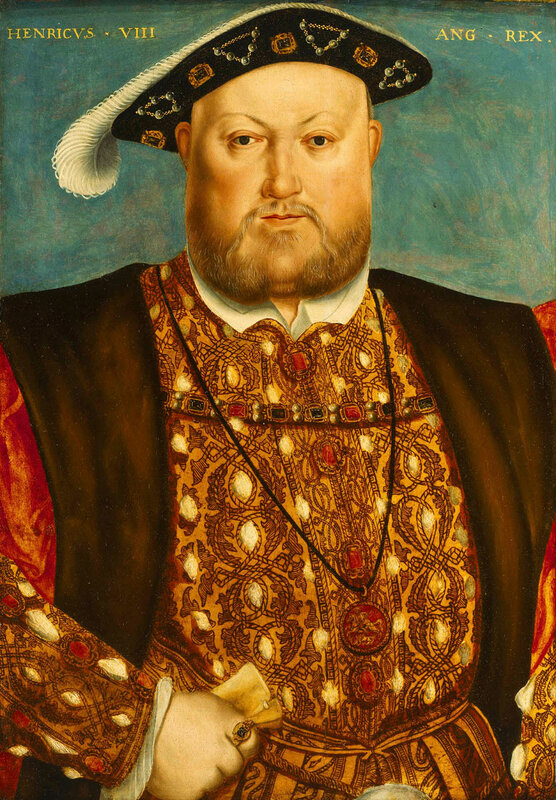
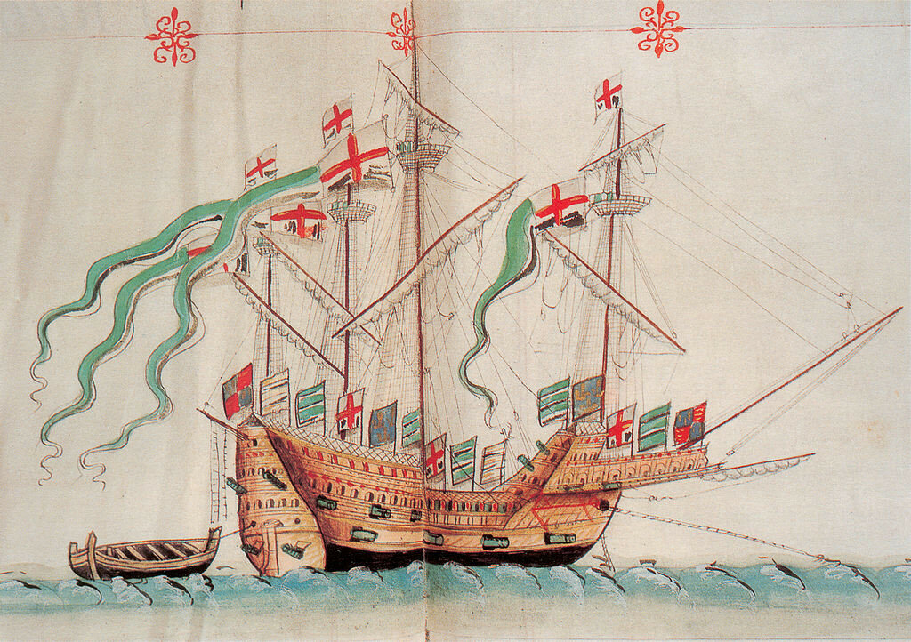
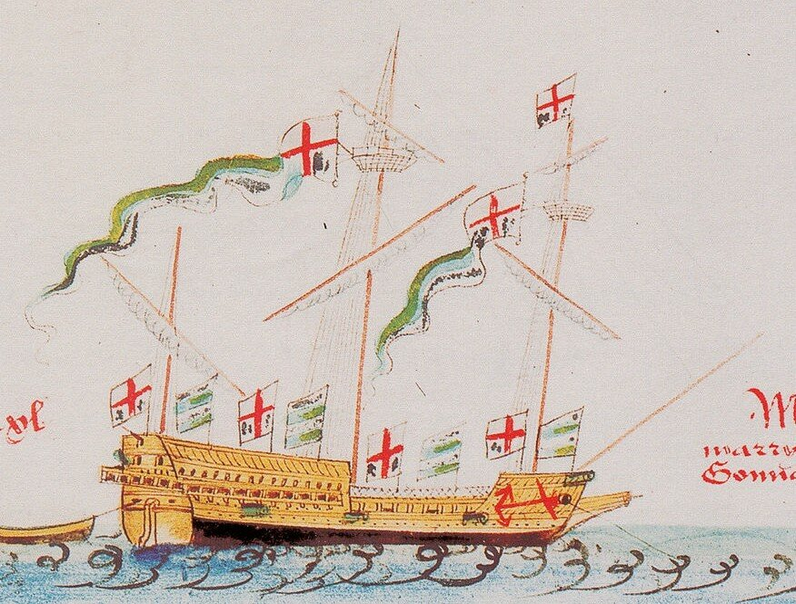
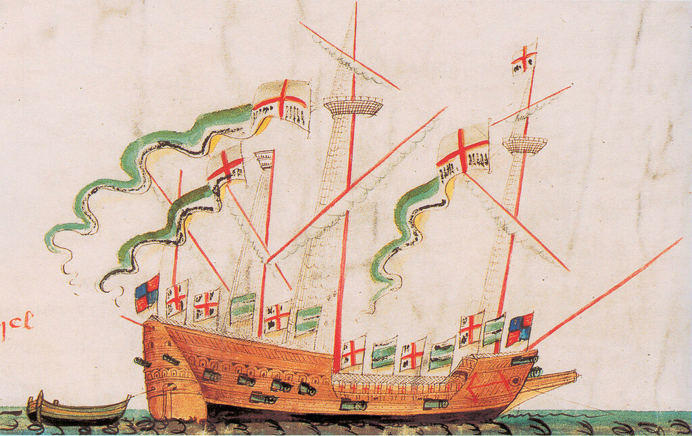
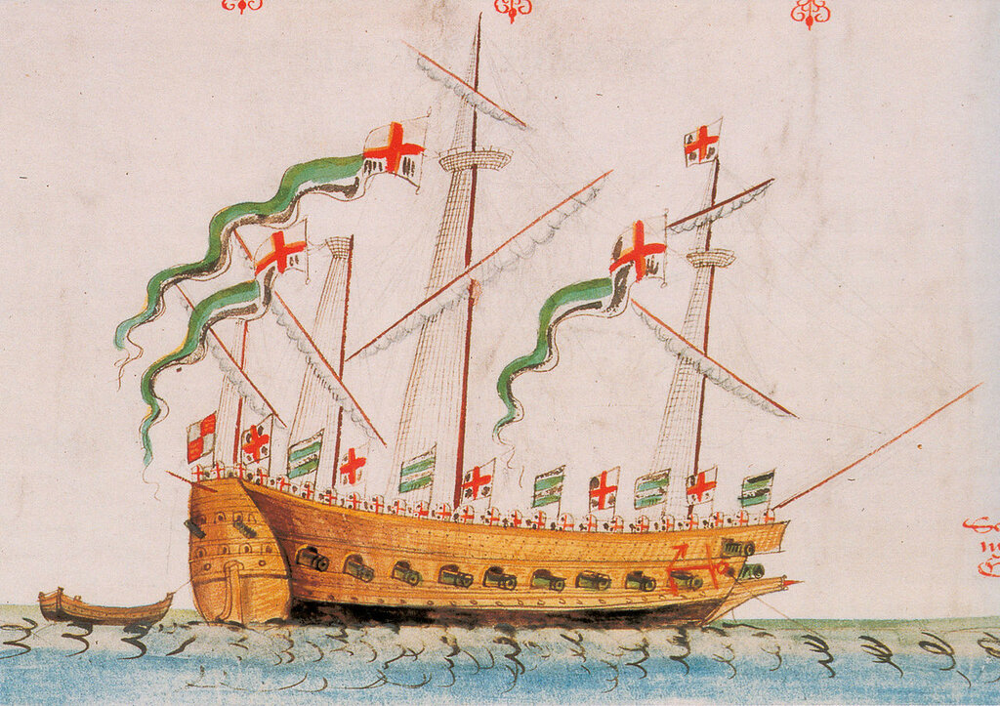

Генрих VIII. Портрет кисти Ганса Гольбейна, . XVI век. National Maritime Museum, Гринвич, Лондон.
Генрих VIII, получив в 1509 году от отца корону, вместе с ней унаследовал военный флот численностью 6 кораблей: две каракки (great ships по тогдашней классификации) Sovereign и Regent, два судна непонятной конструкции 1497 года постройки Sweepstake и Mary Fortune, которые почему-то называли галерами (мы о них писали выше), корабль Michael, захваченный в 1488 году в качестве приза у шотландцев (его списали в 1513 году за негодностью) и «каравеллу» (carvel) Carvel of Ewe, (бывшее купеческое судно, куплено в 1487 году; было перестроено после пожара в 1512 году и переименовано в Mary and John).
Первые два крупных корабля были сразу же поставлены на модернизацию с целью приспособить их для размещения тяжелой артиллерии. Дело в том, что как раз в это время были изобретены корабельные артиллерийские порты (мы подробно писали об этом раньше, там же есть интересное обсуждение этой темы), что дало возможность размещать орудия вдоль бортов под верхней палубой. Но прорезать порты можно было лишь в том случае, если корпус судна был набран вгладь, в карвель, а не внакрой, в клинкер, как это практиковалось в европейском судостроении того времени. Приходилось перестраивать корпуса старых кораблей. Понижение уровня, на котором размещались тяжелые пушки, сразу же благоприятно сказалось на остойчивости кораблей. А это, в свою очередь, способствовало усилению их вооружения за счет размещения легкой артиллерии на верхней палубе и в надстройках на носу и корме.
В это время Генрих задумался о целенаправленной постройке «серийных» военных кораблей. Не судов универсального назначения, пригодных как для коммерческого, так и для военного использования, а именно кораблей для войны на море. Опыт дальних и ближних соседей подсказывал, что таким кораблем может быть только галера. С учетом же мировых тенденций, это должна быть тяжелая галера, прообраз будущих галеасов. Так родилась идея постройки парусно-гребного корабля, получившего название Great Galley (хочу еще раз напомнить, что мы приводим здесь современное написание названия корабля. В действительности она называлась The Greate Gallye) . В ходе постройки и дальнейшей эксплуатации на этом корабле последовательно применялись новейшие достижения военного кораблестроения. Практически корабль эволюционировал от галеры-галеаса к каракке и далее вплотную подошел к галеону. Great Galley был спущен на воду в 1515 году в Гринвиче. Почти сразу после спуска судно стали называть Great Galleass, впоследствии он стал известен как Great Bark, а в 1547 году корабль переименовали в Edward и называли иногда Great Galleon. Сильно пострадал в 1553 г. в результате пожара, возникшего, как говорится, от копеечной свечки. Окончательно списан в 1562 г.

Таким образом, Great Galley недолго проходил в галеасах, превратившись в типичный парусник эпохи. Но такие парусники не могли еще действовать самостоятельно, особенно в прибрежных водах Англии и узостях Ла-Манша, для их поддержки требовались более легкие, желательно парусно-гребные корабли. Ранее в английском флоте эту роль поддержки выполняли гребные баржи, rawbarges, или, как их называли французы, «рамбержи» (ramberges). У нас нет подробных описаний этих кораблей, относящихся к первой половине шестнадцатого века, но, думаю, они не сильно изменились к середине века, когда их описание дал француз Du Bellay, очевидец сражения флотов Англии и Франции, в котором погибла Mary Rose. Описывая отход французских галер из гавани Спитхед, предпринятый, чтобы уклониться от огня английских каракк, Du Bellay пишет, что французы были удивлены, когда в условиях полного штиля их стали преследовать корабли противника необычного видf,
«которые они называют рамбержи (Ramberges). По форме это были скорее длинные, чем круглые суда, более узкие, чем галеры, поэтому они легче управлялись в условиях господствующих там морских течений. Их экипажи были настолько умелы, что добивались скорости хода сравнимой со скоростью галер. Некоторые суда пристраивались в кильватер за нашими галерами и вели по ним огонь из своих пушек, оставаясь невредимыми, так как на наших галерах нет кормовой артиллерии.»
Раздосадованный тем, что вынужден отбиваться от этих «выскочек», Леон Строцци, командовавший французским флотом, развернул свои галеры носом к противнику, но англичане быстро ретировались.
Интересно сравнить оценку, данную французским очевидцем, с описанием действий английских кораблей в письме английского адмирала Джона Дадли к королю Генриху. Спустя несколько дней после описанных событий, а именно 15 августа 1545 года, адмирал, описывая новую стычку английских и французских кораблей, отмечает
“The Mistress, the Ann Gallant and the Greyhound with all your Highness's shallops and rowing pieces did their parts well, but especially the Mistress and the Ann Gallant did so handle the galleys as well with their sides as with their prows, that your great-ships in a manner had little to do.”
Mistress, Ann Gallant и Greyhound вместе со шлюпами и гребными судами Вашего величества выполнили свою роль хорошо, особенно Mistress и Gallant, действовавшие против галер из бортовых и носовых орудий так же успешно, как и наши каракки [great-ships]
Упомянутые адмиралом корабли – это галеасы, только что построенные англичанами. Из приведенного текста мы можем заключить, что основной задачей этого класса английских кораблей была как раз борьба с галерами противника. Точно так же, как 35 лет спустя такая же задача была поставлена перед галеасами венецианцев, принявшими участие в сражении при Лепанто. Английские галеасы нового поколения имели водоизмещение от 140 до 450 тонн и были вооружены большим количеством орудий, как погонных, расположенных в носу, так и бортовых, стрелявших через порты в обшивке. Именно галеасы составили ядро так называемого «крыла» боевого порядка английского флота, которое определил адмирал Дадли в своем боевом приказе на отражение атаки французского флота в августе 1545 года. Командовать этим крылом был назначен вице-адмирал Уильям Тирелл, державший свой флаг на галеасе Grand Mistress.
На момент рассматриваемых нами событий в Англии было построено 14 галеасов: три – до 1540 года, два в 1544 году, три – в 1545 году и четыре – в 1546 году. Кроме того, два галеаса (Salamander и Unicorn ) были в 1544 году захвачены у шотландцев. Это означало, что англичане серьезно опасались возможного вторжения французов в эти годы.
Галеасы постройки до 1540 года (Great Galley, Lion, Jennet) имели по три мачты, все последующие – по четыре. Они несли прямые паруса на первых двух мачтах и латинские – на остальных.

Галеас Lion. Построен у 1536 году. The Anthony Roll of Henry VIII's Navy. 1546.

Галеас Grand Mistress. Построен в 1545 году. The Anthony Roll of Henry VIII's Navy. 1546.
Примечательно, что ни один из галеасов, изображенных в Anthony Roll, не показан с веслами. Это лишний раз подтверждает, что весла на галеасе, в отличие от галер, были вспомогательным движителем.
Галеасы, построенные в 1546 году (Hart, Antelope, Tiger и Bull), имели сплошную, гладкую палубу (помните термин galley-built?)

Галеас Antelope. Построен в 1546 году. The Anthony Roll of Henry VIII's Navy. 1546.
На изображениях мы видим, что весельные порты на галеасе Grand Mistress расположены на том же уровне, что и орудийные порты Это может означать лишь то, что гребцы располагались на батарейной палубе. А это препятствовало размещению там дополнительного числа пушек. Если на Grand Mistress было 28 орудий, то на построенных в следующем году Hart, Antelope, Tiger и Bull их число увеличилось почти вдвое (Hart – 56 орудий, Antelope – 44). Поэтому, чтобы не загромождать батарейную палубу, гребцов переместили в трюм. На изображении Antelope, например, мы видим двадцать весельных портов с каждого борта, расположенных ниже уровня главной палубы галеаса.
О других гребных кораблях английского флота мы поговорим в следующий раз.